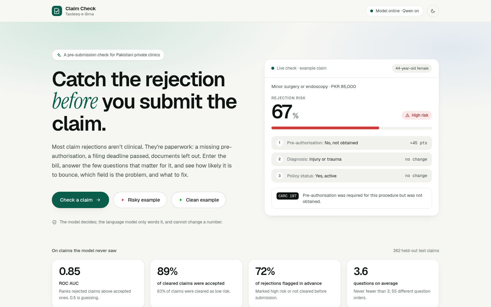
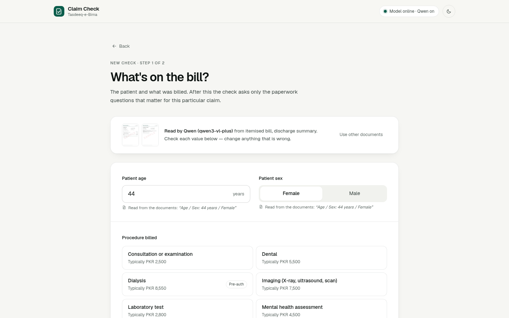
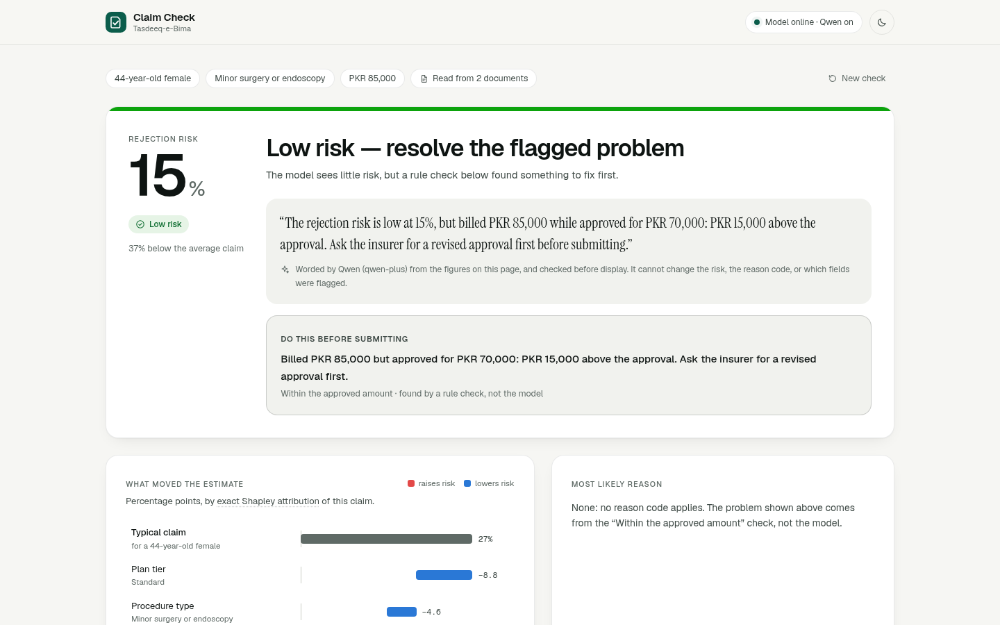
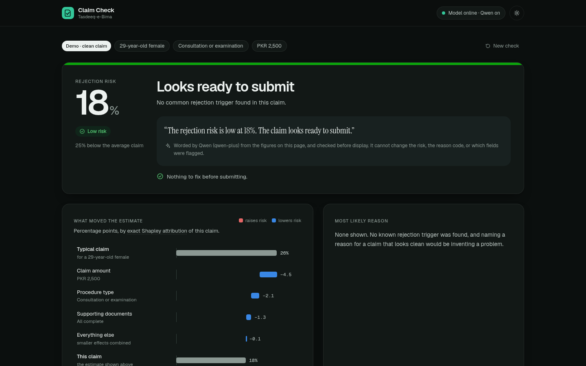

Bano Qabil AI Hackathon
Claim Check
Catch the insurance-claim rejection before the claim is sent.
Mirza Ahsan Baig · Safee AkmalTasdeeq-e-Bima
Catch the insurance-claim rejection before the claim is sent.
Mirza Ahsan Baig · Safee AkmalTasdeeq-e-Bima

Qwen reads them; the clerk confirms
Usually one to three questions
Chance of rejection, the cause, the fix

How it could earn (proposed): per-clinic subscription · licence to TPAs for their provider panel · integration with national e-claims schemes
3.6 questions on average · 55 different question orders

Fills in only what is printed; the clerk confirms every value
The chance of rejection, the verdict, the reason, the checks
One plain sentence from the finished result
362 held-out simulated claims, used once. Verdict thresholds were fitted on a separate split, not chosen by hand.
We’re looking for a partner clinic or TPA to pilot with real claims.
Mirza Ahsan Baig · Safee AkmalThank you

Our own results: models/metadata.json and docs/model-card.md in the project repository (3,612 simulated claims, test split of 362).